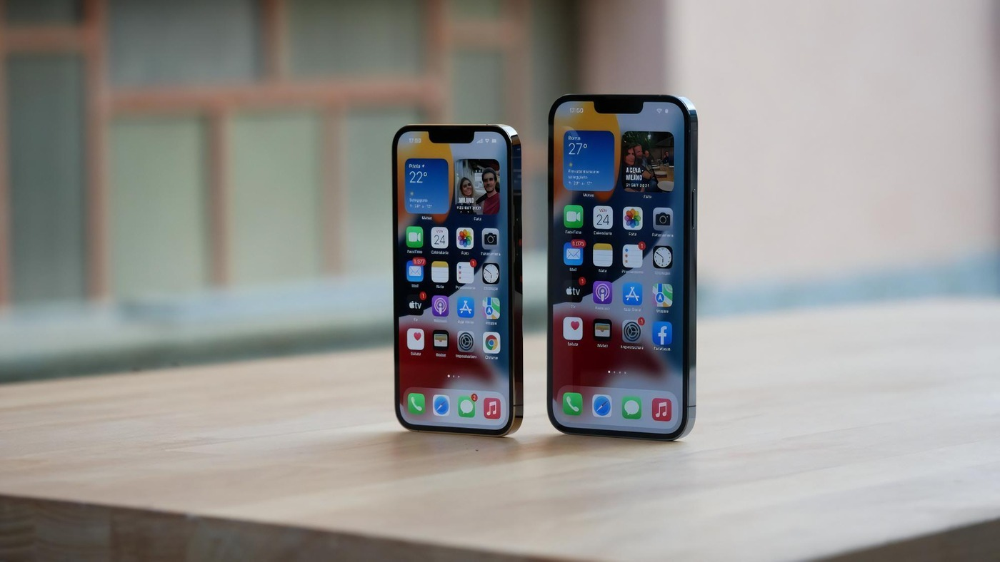

La tecnologia ecosostenibile rappresenta l'evoluzione verso soluzioni innovative che riducono l'impatto ambientale. Questo ambito abbraccia lo sviluppo di energie rinnovabili, l'ottimizzazione dell'uso delle risorse, l'adozione di processi produttivi più puliti e la progettazione di prodotti a basso impatto ecologico.
Riutilizzo vecchi telefoni
Il riutilizzo di vecchi telefoni contribuisce a ridurre i rifiuti e preserva le risorse naturali. Aiuta anche a risparmiare energia e promuove un'economia circolare.

Ricondizionati
L'acquisto di telefoni ricondizionati contribuisce a ridurre la quantità di rifiuti elettronici che finiscono nelle discariche. Inoltre, poiché non è necessario produrre un nuovo telefono, si riduce anche il consumo di risorse naturali, come metalli e combustibili fossili.
Tecnologia riutilizzabile
La tecnologia riutilizzabile favorisce un approccio più sostenibile alla tecnologia, riducendo l'uso di risorse e riducendo i rifiuti elettronici. Inoltre, offre anche vantaggi economici, consentendo di risparmiare denaro e prolungare la vita utile dei dispositivi.
Energie rinnovabili
L'adozione delle energie rinnovabili è fondamentale per la transizione verso un futuro energetico sostenibile, contribuendo a ridurre l'inquinamento, la dipendenza dalle fonti di energia fossile e a creare un ambiente più pulito per le future generazioni.